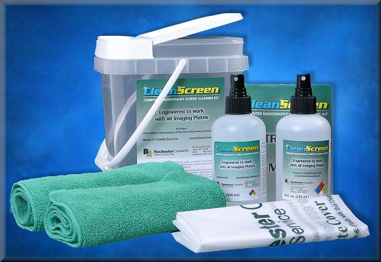
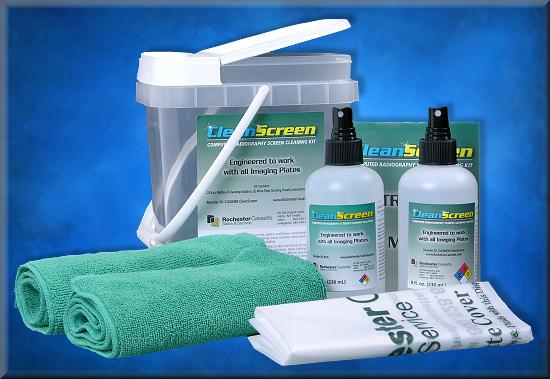
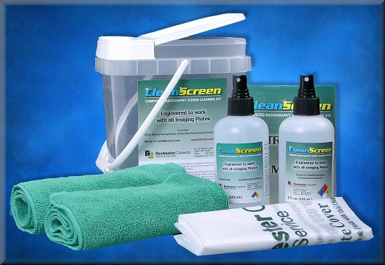
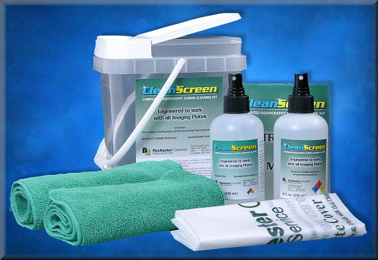

X-Ray and Radiology? You are at the source! Here you will find hundreds of pages of X-Ray related accessories, parts, supplies, and equipment. Accessories from Lead Aprons to Lead Markers. X-Ray equipment including portables. Not to mention X-Ray parts. Be sure to keep checking back as our web design team is constantly updating the information on the current items and adding new products as they become available.